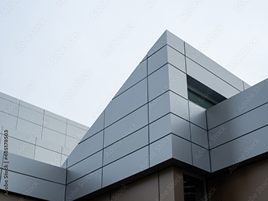
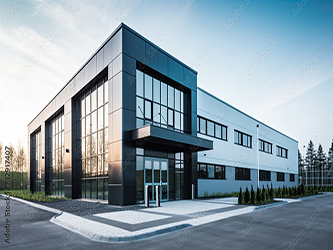
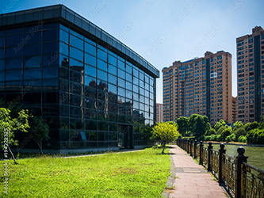
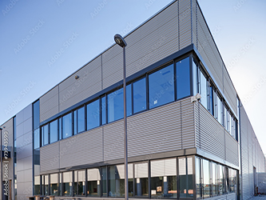

その他系列の劇場

【なんば劇場】当社一番の歴史ある劇場。
大阪にある日本最高峰のお笑いがあつまる演芸場。劇場の看板であるベテラン芸人や、テレビで人気の若手芸人の漫才や落語など、多種多様な笑いあふれるお笑いの劇場。

【よりもと葉月】樋口駅のA出口より徒歩15分。京都のよりもと劇場。豪華出演者による漫才・よりもと新喜劇を毎日開催。人気芸人による夜公演、ライブも開催しております。

【ルミムTHEよりもと】新宿駅から直結。よりもと東日本最大の常設劇場。テレビでもお馴染みの人気芸人による漫才やコント等、お笑いライブを毎日公演中。平日夜は通常公演の日と、単独ライブ・企画ライブでお楽しみいただけます。

【よりもと漫才劇場】2010年5月にグラウンドオープン！よりもと葉月の目の前の若手芸人が所属する常設劇場。単独ライブやユニット、企画ライブなど毎回趣向を凝らした公演を365日開催中です。毎年新たなスターが誕生する、関西若手の拠点劇場です。

【よりもと無限大ホール】2006年3月25日、東京・世田谷区にオープンした、時代の最先端をゆく最も注目すべき芸人が活躍する常設劇場。